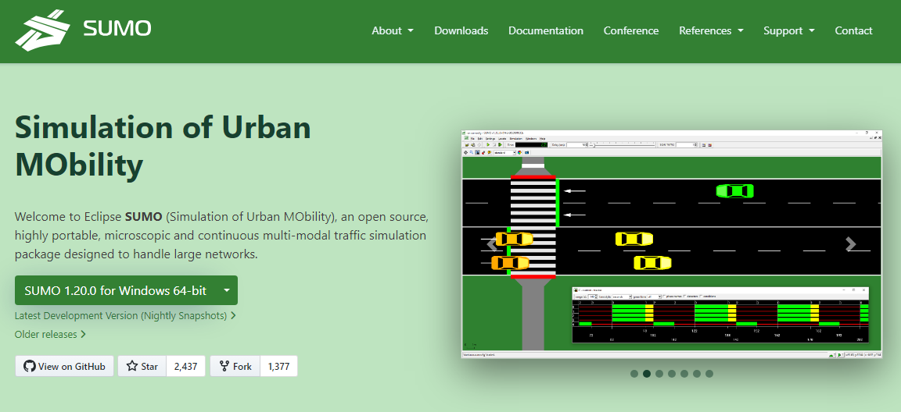
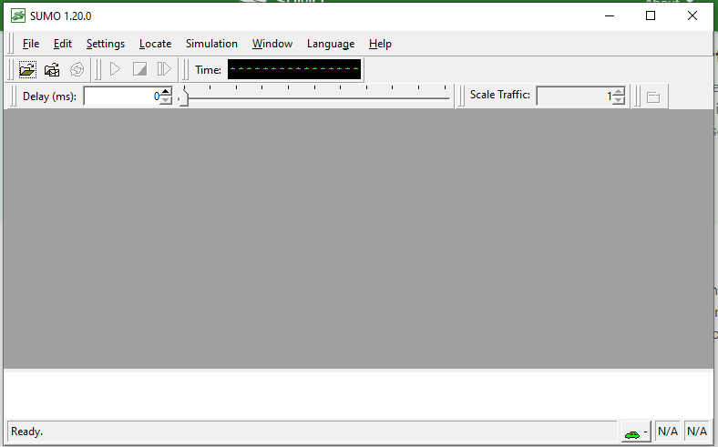
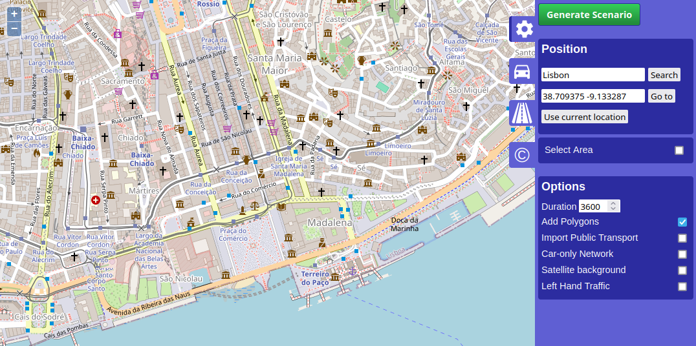
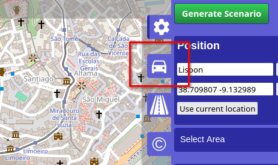
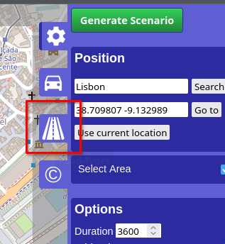
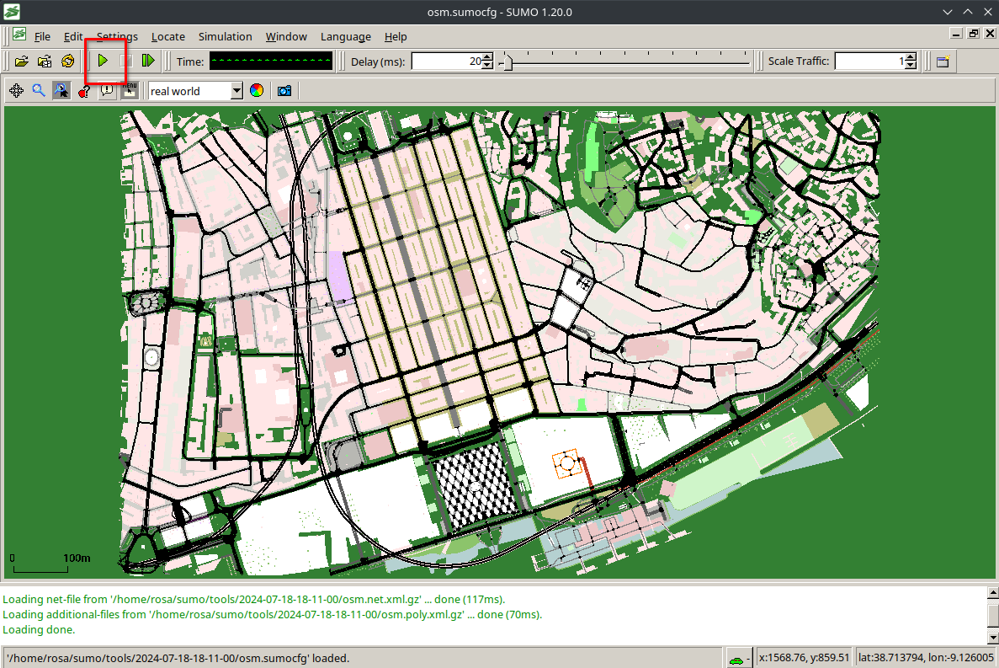
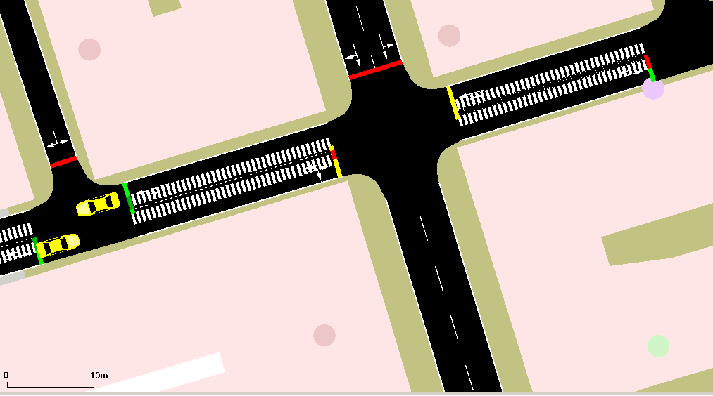

SUMO
In this tutorial we will guide you to install and start using SUMO.
SUMO is a free and open source traffic simulation suite. It is available since 2001 and allows modelling of intermodal traffic systems - including road vehicles, public transport and pedestrians. Included with SUMO is a wealth of supporting tools which automate core tasks for the creation, the execution and evaluation of traffic simulations, such as network import, route calculations, visualization and emission calculation (Lopez et al. 2018).
SUMO is available for any operating system.
Installation
Windows
The installation of SUMO in Windows is pretty straightforward.
Visit https://eclipse.dev/sumo/ and download the installation file (137 MB).

Open the downloaded file and execute in your computer. Accept the defaults and install.
Mac OS
soon. 🐼
Linux
In debian based (ubuntu, kubuntu, popOS, debian) follow this instructions.
Getting started
Open SUMO-gui (Graphic User Interface). You should have a window like this:

Several tutorials are available. Try these ones:
Hello World - Creating a simple network and demand scenario with netedit and visualizing it using sumo-gui
OSMWebWizard - Setting up a scenario with just a few clicks using osmWebWizard.py; getting a network from OpenStreetMap
Quick Start - A more complex tutorial with netedit; first steps in SUMO
Driving in Circles - Work with netedit; define a flow; let vehicles drive in circles using rerouters
SUMOlympics - Create special lanes and simple traffic lights in netedit, more about flows and vehicle types, working with vehicle
Autobahn - Build a highway, create a mixed highway flow, visualize vehicle speed, save view settings
Importing GTFS - Importing public transport schedules from public sources using the General Transit Feed Specification
Import from OpenStreetMap
This requires having Python installed.
Windows: Start -> All Programs -> OSM Web Wizard
MacOS: 🐼
Linux (terminal):
cd ~/sumo/tools
python3 osmWebWizard.pyAnd a window will open in your browser.

You may zoom and pan to the area of your interest1. Click on “Select Area” and draw a rectangle with your mouse for which you wish to generate the simulation scenario.
Network Generation
The infrastructure import from OSM into the SUMO simulation are affected by different Wizard options
- by default the “Add Polygon” checkbox is checked and a road traffic simulation is generated but all types of roads and rails will be imported as well (cycle paths, footpaths, railways etc)
- if the checkbox “left-hand Traffic” is enabled, the network will be built with left hand traffic rules. For most geographic regions where this is required, this feature will be enabled automatically but if it does not work, this option can be used as a remedy.
- if the checkbox “Car-only Network” is enabled, then only roads that permit passenger car traffic will be included. This can be used to reduce the network size and also helps to reduce intersection complexity
- if the checkbox “Import Public Transport” is enabled, then busStops and trainStops will be exported. Also busses, trams and trains will be generated that follow the public transport routes defined in OSM (but they will follow synthetic schedules).
- if the Demand-checkbox “Bicycles” is active, then extra bicycle lanes will be added to roads where OSM contains this information
- if the Demand-checkbox “Pedestrians” is active, then sidewalks and pedestrian crossings will be generated
Demand Generation
The demand is defined by the demand generation panel. You activate this panel by clicking on the car pictogram.

SUMO supports various modes of transport. At the demand generation panel, you can activate/deactivate the individual modes of transport by clicking the corresponding checkboxes. For each mode of transport, the OSM Web Wizard generates random demand based on a certain probability distribution, which is influenced by two parameters:
- Every time a new vehicle is generated, the OSM Web Wizard randomly chooses a departure and arrival edge for the vehicle. The Through Traffic Factor defines how many times it is more likely for an edge at the boundary of the simulation area being chosen, compared to an edge entirely located inside the simulation area. A big value for the Through Traffic Factor implies that many vehicles depart and arrive at the boundary of the simulation area, which corresponds to a scenario with a lot of through traffic.
- The Count parameter defines how many vehicles are generated per hour and lane-kilometer. Assuming
the network contains 3 edges with a combined length of 5 km
that each has 2 lanes which allows the current traffic mode
and the count value is set to 90,
then 5 * 2 * 90 = 900 vehicles per hour will be generated.
This translates to a randomTrips parameter of p=4 which means a new vehicle is inserted every 4 seconds somewhere in the network.
The next step is generating and running the scenario.
Road-Type Selection
In the Road-Type tab of the OSM Web Wizard one can define which road types to be downloaded and rendered.

For example, one can only choose motorways, primary, secondary and tertiary to simulate major traffic. This impacts the file size of the OSM map data.
By default, all road types are checked which implies downloading and rendering all roads.
Unchecking the “Add Polygon” checkbox in the Demand Generation section disables downloading and rendering non-road objects like buildings, waterways, etc. resulting in a smaller file size.
Generating and Running the scenario
The complete scenario will be generated automatically once Generate Scenario in the control panel has been clicked. The scenario generation takes a couple of seconds or minutes (depending, among other factors, on the size of the scenario).
Once the scenario generation process has finished, the sumo-gui starts and the simulation can be started by pressing the Play button.
 You will see agents making their trips. Adjust the Delay to make it faster or slower.

A new directory under your user folder ~/SUMO/yyyy-mm-dd-hh-mm-ss will be created to host the data and results. You may now edit those files and re-run the simulation (open run file).
Use the case study data
Soon 🥽
References
Footnotes
Caution: if the map excerpt covers a very large area, the simulation might become slow or even unresponsive. We suggest choosing a similar zoom level as in the initial view.↩︎